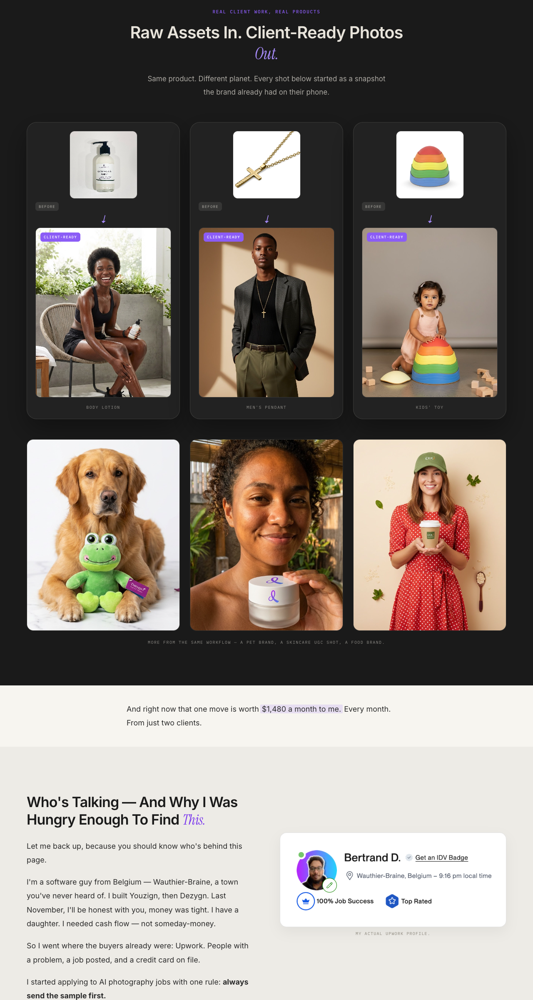
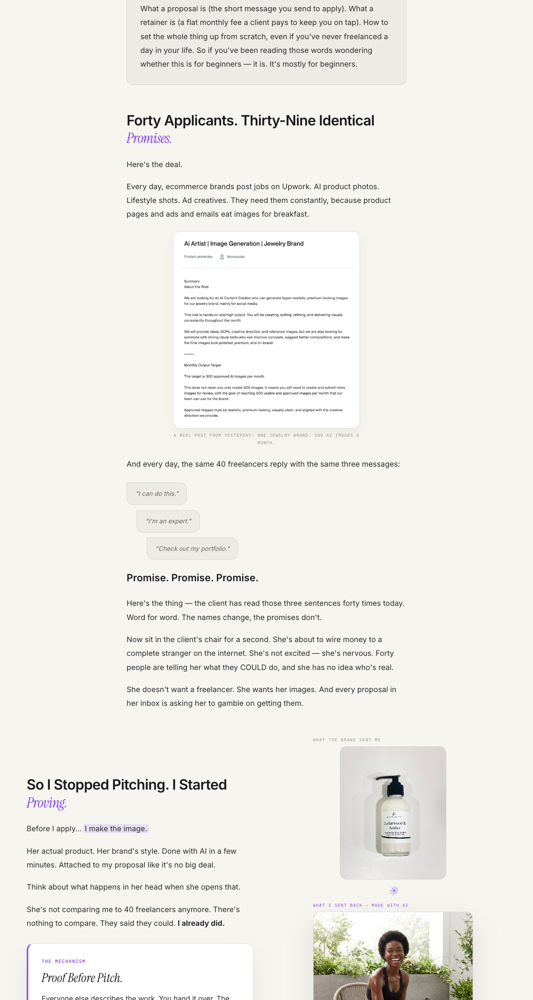
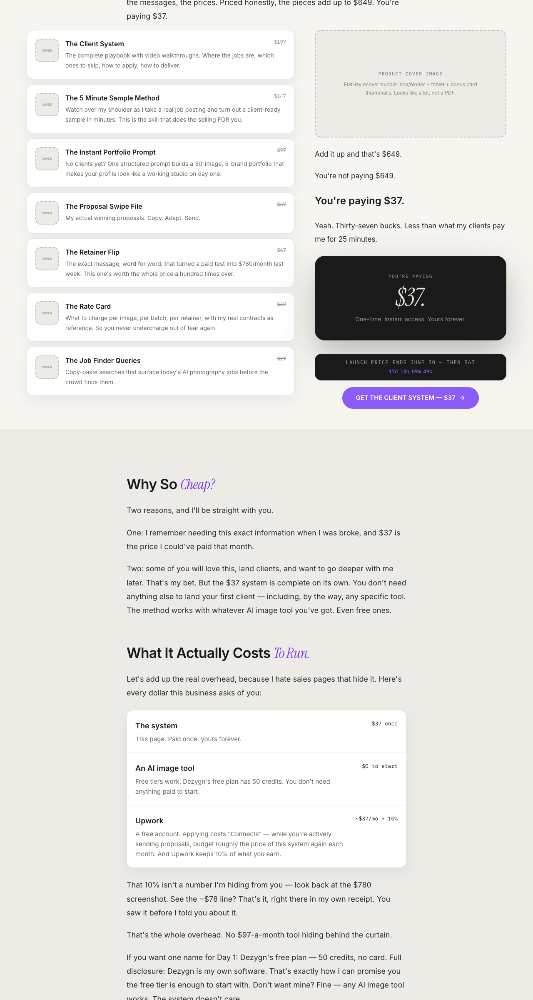
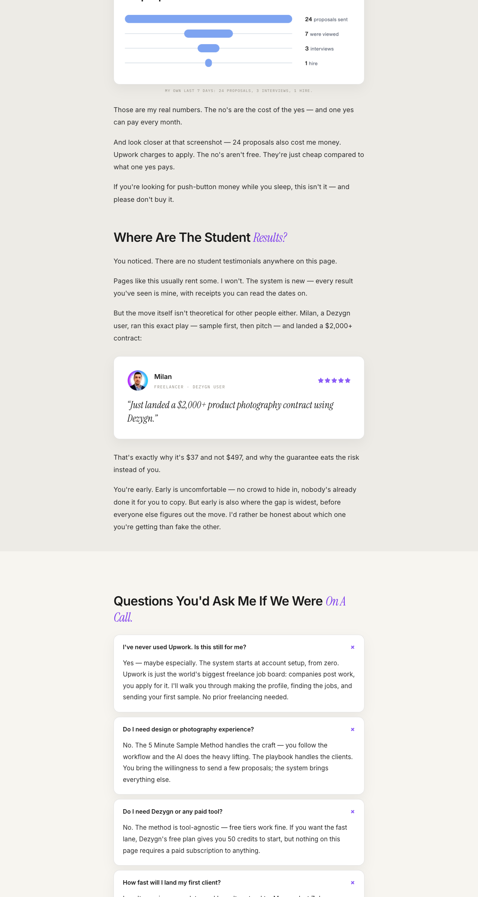
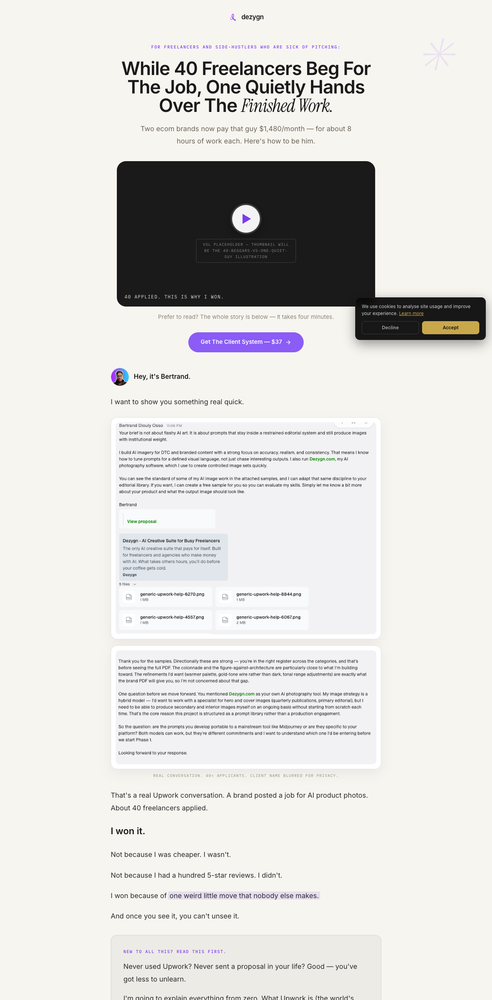
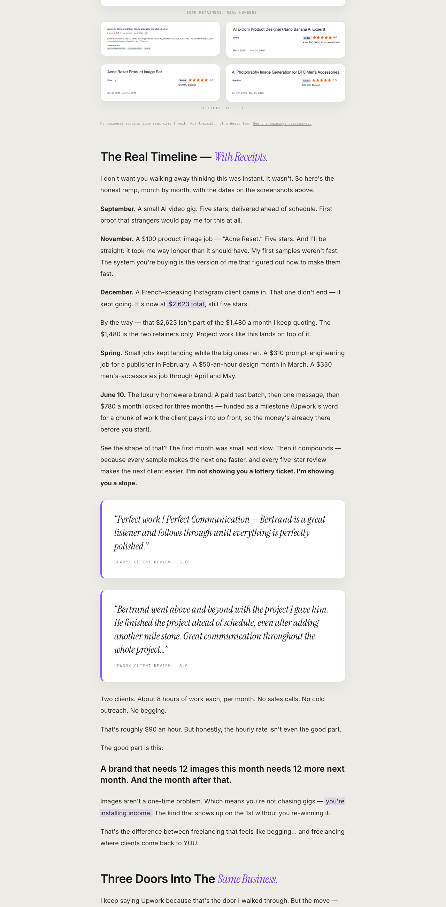
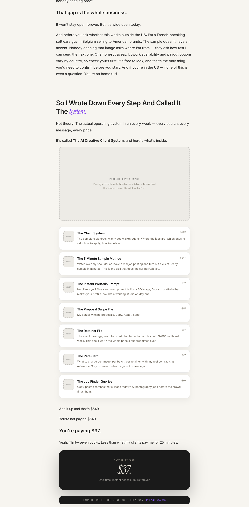
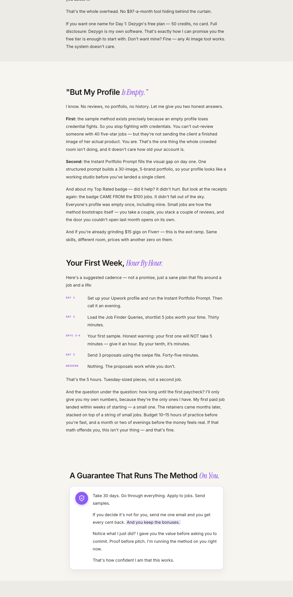

Simulated 20-persona JVZoo-buyer panel + 5 deep cynics evaluate the $37 tripwire letter each round; we fix the top objections and re-run until ≥10% panel conversion (≥2/20 BUY). Goal: client-system-letter-goal.md · Personas: client-system-personas.json · Page: /client-system-preview · Newest entries first.
Final test: 2 of the 5 hardened cynics flipped to BUY (first time ever) · panel 35% · lowest NO count yet
Panel (20): 7 BUY (Priya, Tunde, Ahmed, Kevin, Grace, Dmitri, Nadia) · 9 MAYBE · 4 NO (Janet, Carol, Lisa, Bob) — the lowest NO count across all rounds; Tunde & Dmitri moved up to BUY. Cynics (5): 2 BUY, 3 MAYBE, 0 NO.
Greg (time-skeptic) → BUY: the week-1 hour cadence + real before/after photos closed the quality-bar doubt. "I enter card details."
Vince (funnel pro) → BUY: "the value stack, the announcement bar, the layout consistency… add up to a page I'd charge a client to build." Only remaining blocker to PUBLIC sharing = ship the product cover.
Walt/Donna/Eleanor held at MAYBE, all warmer. Recurring unmet asks unchanged: (1) product cover (now the single loudest gap — Vince, Raj, Lisa), (2) one real SYSTEM student result (Milan reads as "using Dezygn," not "ran the system" — Walt/Donna), (3) the VSL video (still placeholder — Dale almost bounced on it, Steve/Eleanor want it).
New tactical notes: Brigitte/Frank will test the countdown in incognito — the deadline must be genuinely honored (real date, no reset). Vince: move the guarantee block to immediately above the final CTA. Carol/Bob/Mei keep bouncing because Door 2 (own-shop) / Door 3 (local) are too buried.
Research delivered (3 streams):
Top JVZoo pages — the big gap: there's no funnel. Flat one-product page, checkout still a TODO. Tripwire + order-bump + OTO ≈ 3× revenue per lead vs front-end alone. Plan: $37 front-end → $27 order bump (DFY Sample Vault) → $97–197 OTO1 (accelerator/DFY templates) → $47 downsell → AIPA as application-gated backend. Sell native on JVZoo/W+ (1-click OTOs + affiliates), not a bare Stripe link. Glue trust lines + card badges under every CTA; add a fast-action bonus as a second urgency lever.
Ryan Deiss VSL framework — 12-beat formula (open → problem+promise → video scarcity → agitate → reveal → features/benefits → CTA1-desire → credentials → guarantee → CTA2-logic → warnings → CTA3-fear), 3-CTA escalation, 12–24min long-form but 3–5 min for a $37 tripwire; hook in 3s, captions, talking-head intercut with proof, add a unique-mechanism beat (we own "Proof Before Pitch").
HyperFrames = open-source HTML→MP4 render engine (NOT an avatar tool). Voice/likeness = separate HeyGen product (clone voice + photo avatar → talking-head MP4), then composite in HyperFrames with B-roll/screenshots/captions.
VSL deliverables shipped: the full 12-beat VSL script (docs/landingpage.v4/vsl/client-system-vsl-script.md), the frames.md motion style guide, HyperFrames cloned + a scaffolded vsl-project/ (design tokens + 13 real assets wired in), and hyperframes-setup.md pipeline.
Width-rhythm fix + timer → announcement bar + real value stack
Width oscillation killed. Root cause: running prose was centered-floating (mx-auto max-w-[42rem]) while figures went full-bleed — so the page swung narrow↔wide ~8×. Fix: one consistent max-w-6xl frame with a 12-col grid; all running text is now LEFT-anchored at col-span-7 (same left edge every section), companions at col-span-5 (real screenshots / stat cards), full-width figures at col-span-12. Three consistent modes, no centered tube.
Timer → sticky announcement bar. The floating dark lozenge above the CTAs is gone; the countdown is now a slim sticky top bar (dark, purple numbers), condensing on mobile. Both inline timers removed.
Real value stack. Each of the 7 items now shows a visible "$197 value" + a numbered purple badge (replacing the dashed "COVER" gray boxes the cynics flagged), then a TOTAL VALUE $649 row, then the $37 price. Math unchanged (197+147+97+67+67+47+27=649).
Verified: tsc + build clean, copy preserved (3,759 words, one authorized deletion of the redundant "Add it up and that's $649" line), 0 overflow at 375px, all images render (desktop), mobile stacks cleanly.
2026-06-13 · 06:30 · round 3 — real assets + wide redesignCynics warmed: 5/5 MOVED
Wide two-column redesign + real client photos + Milan testimonial → all 5 cynics moved (still 0 BUY, but NO→MAYBE and cold→warm)
Founder directives this round: (1) pull the real Milan testimonial + real client before/after images off /v3; (2) keep the $649 value stack (justified by the $3,000+ Upwork earnings); (3) make the design wider — two-column image/text sections, JVZoo energy, less "Greek column." Done: page rebuilt to max-w-6xl with prose at max-w-[42rem]; new full-bleed dark "Raw Assets In. Client-Ready Photos Out." showcase (3 real before→after pairs + lifestyle gallery); mechanism / backstory / retainer / empty-profile / offer-stack all converted to two-column; Milan card added inside a reframed (still-honest) "Where Are The Student Results?". 10 real client images downloaded + optimized locally. tsc + build clean, 0 overflow at 375px, ~3,760 rendered words.
Cynic re-test (the 0/5 honest signal): every one moved up. R2 was 4 MAYBE + 1 NO (Donna). R3 is 5 MAYBE, 0 NO — Donna NO→MAYBE, the other four cold-MAYBE→warm-MAYBE, all five self-reported MOVED: YES.
The showcase won universally. "The photos did what three pages of writing could not" (Eleanor). "Best thing that's happened to this page… $200-an-image result" (Vince). "First time I believed the skill was learnable, not just that HE had it" (Donna). This was Vince's old "show me one stunning image" flip condition — now met.
The wider layout fixed the congruence gap (Vince): "reads like a creative operation, not a Gumroad template."
Milan moved them but didn't close them — sharp catch from Walt & Donna: the quote says "using Dezygn" (the tool), not "using The Client System" (the product). A Dezygn user ≠ a system buyer who started from zero. Honest, but not the student proof they want.
The remaining blocker to cynic-BUY is now crisp and unanimous — and it's ASSETS, not copy:
The 7 product covers are still gray placeholders — now the LOUDEST thing on the page because the showcase made everything around them sharper (Vince: "dressed the window, left the shelves empty"). Cheapest highest-leverage next win.
One real result attributed to the SYSTEM (not the tool) — a testimonial naming the method, or a true from-zero student with a date + dollar. Milan is close but tool-attributed.
The VSL video (lower weight).
Net: the redesign round validated the direction — real product photography is the single strongest asset on the page, and the warm-MAYBE cynics are now one asset-drop (product covers) from BUY. Copy is no longer the lever; production is.

r3 — "Raw Assets In. Client-Ready Out." showcase

r3 — mechanism, two-column (raw→client-ready)

r3 — offer stack, two-column JVZoo

r3 — Milan testimonial + honest student-results section
Round 2: panel 35% (7/20), cynics still 0/5 — copy has plateaued; remaining gains need ASSETS, not words
Applied 6 surgical patches (the $2,623-vs-$1,480 clarification, an honest hours-to-first-paycheck paragraph, a named Day-1 tool + a disclosure that Dezygn is Bertrand's own software, a US-reassurance line, the Fiverr exit-ramp line, and a Door-1-is-the-beginner-door clarifier), then 3 zero-downside nits (Day-1 tool now inside the day-plan box, "ecom" → "ecommerce — online shops" in the hero, three countdown timers trimmed to two). Letter is now 3,617 words (was 1,505 at R0). Re-ran the identical 20-panel + 5-cynic group.
The patches worked exactly where aimed — and revealed a ceiling.
Greg (cynic) flipped NO → MAYBE, quoting the new hours-to-first-dollar paragraph verbatim as the line that won him: "it didn't exist before… that's the biggest improvement."
Mei flipped NO → MAYBE (Door clarity). Eleanor: the Day-1 Dezygn name "almost got me" (now moved into the day box). Walt warmed — flip condition narrowed to "show me one third person."
But it's now zero-sum:Donna flipped MAYBE → NO reading the same new ramp-honesty ("a month or two of evenings") and doing the Connects math herself; Grace BUY → MAYBE (international caveat surfaced the PH-payout fear); Bob MAYBE → NO (wanted Door 3 expanded, not just labeled).
Panel arc across rounds: 35% → 40% → 35% — noise around ~37%, not a trend. Two rounds without net gain = the goal doc's plateau stop-condition.
Every surviving MAYBE/NO converges on three flip conditions that are NOT copy:
One real student result — most-cited unmet condition (Marcus, Dale, Raj, Walt, Donna, Grace, Vince). Must be earned from a beta user, not written. Highest leverage item by far.
Real VSL video + real product-cover image — the gray placeholders are now Vince's and Walt's hard blockers ("ship the cover — worth more than three timers"). Eleanor and Donna read "unfinished."
The $649 → $37 value stack — Walt, Vince, and Steve (who is literally this audience) all flag it as the one fake note breaking an otherwise honest page. Copy-fixable, but a real creative tradeoff → flagged for Bertrand, not changed unilaterally.
Structural non-buyers who can't be flipped without breaking the core: Lisa (design-snob, the "no experience needed" framing insults her by design), Sandra (self-identified won't-implement), Mei/Carol-as-client (they're the buyer of the service, not the seller). These are correct exclusions, not failures.
Recommendation: stop the copy loop here. Target (≥10%) is met 3.5×. The honest path from ~37% panel / 0% cynic-BUY runs through assets and social proof: (1) land one beta student + screenshot their first job, (2) shoot the VSL and a real product cover, (3) decide the value-stack question, then a final measurement round. None of that is more words.

r2 — hero + VSL placeholder

r2 — real timeline + pull-quotes

r2 — stack + price (cover still placeholder)

r2 — costs ledger + empty-profile
2026-06-13 · 00:25 · round 0 resultsBenchmark
Round 0: 35% panel conversion (7/20 BUY) — but cynics went 0/5 and the objections cluster hard
Panel votes: BUY ×7 (Priya, Steve, Ahmed, Kevin, Grace, Frank, Nadia) · MAYBE ×7 (Dale, Tunde, Mei, Raj, Sandra, Dmitri, Paula) · NO ×6 (Marcus, Janet, Carol, Lisa, Brigitte, Bob). Deep cynics: Walt NO · Donna NO · Greg MAYBE · Eleanor NO · Vince MAYBE.
The warm panel clears the 10% bar at benchmark — so the working target shifts to holding ≥35% while converting MAYBEs and flipping cynics (the panel skews agreeable; the cynics are the honest signal). What won people: the 24/3/1 proposals disclosure (cited by 6), "She doesn't want a freelancer. She wants her images.", the keep-the-bonuses guarantee, the meta-guarantee move, "$90 an hour". What's broken — recurring objection clusters (3-of-5 rule triggers on A–D):
A. Only Bertrand's results (Walt, Raj, Dale, Vince): no third-party proof; "two clients is a story, not a system."
B. Zero-reviews cold start ignored (Walt, Donna, Nadia, Grace, Paula): "you had a Top Rated badge; I start from profile zero."
C. Hidden costs & ramp-up hours (Donna, Greg, Sandra, Marcus): Connects fees, tool costs, "5 hours/week vs 24 proposals/week" math, no month-one timeline.
D. Never shows a single image (Vince, Grace, Eleanor): "2,000 words about AI photos without one jaw-dropping photo."
E. Beginner doors closing (Eleanor, Janet, Paula): Upwork/retainer/prompt never explained; letter assumes a working freelancer.
F. Wrong-door readers bounce (Carol, Bob, Mei): own-shop owners and local-client owners hear "this isn't for me."
G. International doubt (Priya, Tunde, Brigitte): does this work outside the US?
Round 1 plan: meaty rewrite to ~3,200–3,800 words (also fixes the known "too short/too thin" feedback): honest ramp timeline with real dates, "what it really costs to run" block, zero-reviews section, beginner on-ramp + plain-English terms, "three doors" section (freelancer / own shop / existing local clients), international paragraph, founding-buyer honesty block (no fake student testimonials — say so), real client review pull-quotes, real AI shots strip, FAQ resurrection, recap box, wider/heavier layout.
2026-06-12 · 23:59 · kickoffRound 0 running
Goal locked, panel built, benchmark snapshot taken
Goal doc written: meaty long-form rewrite + iterate via simulated focus groups to ≥10% panel conversion. Stop on target, plateau (<1 vote gain twice), or 4 rounds/session.
Fixed panel created: 20 JVZoo-buyer personas (serial buyers, broke skeptics, international hustlers, tech-averse boomers, an affiliate who swipes funnels, a design snob…) + 5 deep cynics. Same personas every round.
Benchmark snapshot: current letter is 1,505 words (known-light vs the 3,000–5,000 JVZoo norm), Belcher skeleton + real Upwork proof shots, VSL/illustration/product-cover still placeholders, narrow max-w-2xl column.
Round 0 focus group dispatched: 5×4-persona panel sessions + 5 separate deep-cynic sessions, all voting BUY/MAYBE/NO with objections and flip conditions.